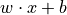

xopto.util.regression.ann module¶
- class Errors[source]¶
Bases:
object- static relative_rmse(true: numpy.ndarray, estimated: numpy.ndarray, threshold: Optional[float] = None) → numpy.ndarray[source]¶
Relative root mean square error estimator.
- Parameters
true (np.ndarray) – True values stored row-wise.
estimated (np.ndarray) – Estimated values stored row-wise.
threshold (float or None) – Only the true values that exceed this threshold are included in the evaluation.
- Returns
rrmse – Estimated relative root mean square error (RMSE).
- Return type
np.ndarray
- class Model(topology: Optional[xopto.util.regression.ann.Topology] = None, filename: Optional[str] = None)[source]¶
Bases:
objectCreates an ANN model from a topology object or a model file. To use an existing model, provide two files with same name and extensions .h5 (keras model file) and .json (topology file). To create a new model, provide a topology object (an instance of Topology).
- Parameters
topology (Topology) – Topology object or None.
filename (str or (str, str)) – Keras model (.h5) file and topology (.json) file (extension not required). If list or tuple, the first item should be the model file and the second item should be the topology file.
- activation(layer_index: int) → object[source]¶
Returns the activation function instance of the layer.
- Parameters
layer_index (int) – Zero-based index of the layer.
- Returns
activation – Weight of the layer connections as a Numpy array.
- Return type
object
- benchmark(input: numpy.ndarray, true_value: numpy.ndarray, threshold: Optional[float] = None) → Tuple[numpy.ndarray, numpy.ndarray, numpy.ndarray][source]¶
Predictions are evaluated by the RMSE and relative RMSE metrics. Optionally, samples for which the true values do not exceed the given threshold can be excluded from the relative RMSE estimation.
- Parameters
input (np.ndarray) – Array of input samples stored row-wise.
true_value (np.ndarray) – Array of true values that will be assessed against the model predictions using the RMSE and relative RMSE metrics.
threshold (float) – Threshold for relative RMSE benchmark. Only the true values that exceed this threshold are included in the evaluation.
- Returns
y (np.ndarray) – Predicted values.
rmse (float) – Root mean square error
rrmse (float) – Relative root mean square error
- filename() → str[source]¶
Name of the file including path from which the current model was loaded or saved to.
- Returns
filename – File name.
- Return type
str
- property layers: List[tensorflow.python.keras.layers.core.Dense]¶
List of layers.
- classmethod load(filename: str) → xopto.util.regression.ann.Model[source]¶
Load model, underlying topology, fit configuration and fit results from an existing ‘.h5’ and ‘.json’ files.
- property ninput: int¶
The number of inputs.
- property noutput: int¶
The number of outputs.
- predict(input: numpy.ndarray) → numpy.ndarray[source]¶
Make prediction with the model. Prediction are made in three steps: 1. Preprocessing (normalization, scaling, …) of the input data. 2. Predicting outputs by the model. 3. Postprocessing (denormalization, descaling, …) of the predictions.
- Parameters
input (np.ndarray) – 2D array of shape (m, n) where m is he number of observations (e.g. wavelengths) and n is the number of variables (e.g. source-detector separations).
- Returns
y – Numpy array of predicted values.
- Return type
np.ndarray
- prepare_train(train_input: numpy.ndarray, train_output: numpy.ndarray, validate_input: Optional[numpy.ndarray] = None, validate_output: Optional[numpy.ndarray] = None)[source]¶
Training and validation data sets are prepared using the pre/post-processors of the input and output variables defined by the topology. Validation data set is optional and is used to estimate the point when the training process can be stopped.
- Parameters
train_input (np.ndarray) – 2D training data set of inputs with shape (m, n) where m is the number of observations (e.g. wavelengths) and n is the number of variables (e.g. source detector separations).
train_output (np.ndarray) – 1D or 2D array of true values with shape (m, k) where m is the number of observations (e.g. wavelengths) and k is the number of predicted variables (e.g. mua, musr, gamma, delta, …). Usually, k=1 because each parameter is predicted by a dedicated network/topology.
validate_input (np.ndarray) – 2D array with input validation data set. The second dimension must equal the second dimension of the train_input data set.
validate_output (np.ndarray) – 1D or 2D array of true values of the validation data set. The second dimension must equal the second dimension of the train_output data set.
- save(filename)[source]¶
Save trained ANN model for later use. The ANN model is saved in the Keras native .h5 file format. In addition, a file with the same name and .json extension is created. This file holds the corresponding topology data (key “topology”), fit configuration (key “fit_configuration”) and fit results (key “fit_configuration”).
- Parameters
filename (str) – Full file name (extension is not required).
- summary(*args, **kwargs) → str[source]¶
Prints a string summary of the model.
- Parameters
args – Optional positional arguments passed to the model method.
kwargs – Optional keyword arguments passed to the model method.
- property topology: xopto.util.regression.ann.Topology¶
Topology instance used by this model.
- train(batch_size: int = 32, epochs: int = 1000, optimizer=None, lr: float = 0.001, lrcb: Optional[Callable[[int, float], float]] = None, loss: str = 'mse', loss_weights=None, bestfile: Optional[str] = None, patience: int = 20, min_delta: float = 1e-06, shuffle: bool = True, validation_split: float = 0.0, verbose: bool = False)[source]¶
Fit/train the ANN model. If a validation data set is passed to the prepareTrain method, the training process can be stopped early depending on the values of the patience and min_delta parameters.
- Parameters
batch_size (int) – Batch size.
epochs (int) – Number of epochs.
verbose (int) – Verbose mode.
optimizer (str or keras.optimizers.Adam, ...) – One of the Keras optimizers. Default is Adam.
lr (float) – Default Adam optimizer learning rate. Only used if the optimizer parameter is not specified (None).
lrcb (Callable[[int, float], float]) – A callable that takes takes an epoch index as input (integer, indexed from 0) and current learning rate and returns a new learning rate as output (float).
loss (str) – Loss metric.
loss_weights (List[float] or dict) – Optional list or dictionary specifying scalar coefficients (Python floats) to weight the loss contributions of different model outputs. If a list, it is expected to have a 1:1 mapping to the model’s outputs. If a tensor, it is expected to map output names (strings) to scalar coefficients.
bestfile (str) – After each training epoch, the intermediate model (if improvement is observed) is optionally saved to the specified file.
patience (int) – Number of epochs with no improvement after which the training will be stopped. If None, the patience will be set to the number of epochs.
min_delta (float) – Minimum change in the monitored quantity to qualify as an improvement, i.e. an absolute change of less than min_delta, will not count as an improvement.
shuffle (bool) – Training data set is randomly shuffled if set to True.
validation_split (float) – Float between 0 and 1. Fraction of the training data to be used as validation data. The model will set apart this fraction of the training data, will not train on it, and will evaluate the loss and any model metrics on this data at the end of each epoch. The validation data is selected from the last samples in the x and y data provided, before shuffling. This option is ignored in case a dedicated validation set is provided to the
prepare_train()method.validation_freq (int) – Only relevant if validation data is provided. Integer or list/tuple/set. If an integer, specifies how many training epochs to run before a new validation run is performed, e.g. validation_freq=2 runs validation every 2 epochs. If a list, tuple, or set, specifies the epochs on which to run validation, e.g. validation_freq=[1, 2, 10] runs validation at the end of the 1st, 2nd, and 10th epochs. Note: Parameter supported only for keras version >= “2.2.4”!
- train_configuration() → dict[source]¶
Returns a dict with train configuration.
- Returns
cfg – Train configuration.
- Return type
dict
- train_report() → dict[source]¶
Returns a dict with train statistics and data.
- Returns
report – Train statistics and data.
- Return type
dict
- weights(layer_index: int) → List[numpy.ndarray][source]¶
Returns the weights of the selected layer.
- Parameters
layer_index (int) – Zero-based index of the layer.
- Returns
weights, bias – Weight of the layer connections as a Numpy array. Bias terms of the layer as a numpy vector.
- Return type
List[np.ndarray]
Note
Output of a layer is computed as , where
 is a matrix of weights of the connections,
is a matrix of weights of the connections,  is a
vector of bias terms and
is a
vector of bias terms and  is the input of the layer.
is the input of the layer.
- class Topology(inputs: int = 5, node: Optional[int] = None, bias: bool = True, activation: str = 'relu', initializer: str = 'normal', pp_input: Optional[xopto.util.regression.pp.Preprocessor] = None, pp_output: Optional[xopto.util.regression.pp.Preprocessor] = None)[source]¶
Bases:
objectSequential artificial neural network topology constructor.
- Parameters
inputs (int) – Number of inputs to the network (not the number of neurons in the first layer).
node (int Tuple[int]) – Number of nodes/neurons in the layers. The number of elements in the list defines the number of layers. The last entry in the list represents the number of outputs, i.e. neurons in the output layer. The number of hidden layers is one less the number of elements in the neurons list/tuple.
bias (bool or Tuple[bool]) – Enables additional bias for the layers. If a list or tuple of bool, the number of elements must match the number of layers. If a bool, the value applies to all the layers.
activation (str or Tuple[str]) – Activation function of each layer. If a list or tuple of str, the number of elements must match the number of layers. If a str, the same activation function is used for all layers.
initializer (str or Tuple[str]) – Generator for initialization of network parameters.
pp_input (Preprocessor) – Preprocessor of the input variables.
pp_output (Preprocessor) – Preprocessor of the output variables.
- property activation: Tuple[str]¶
The activation functions used in the individual layers.
- property bias: Tuple[str]¶
The bias terms used in the individual layers.
- classmethod fromdict(data: dict) → xopto.util.regression.ann.Topology[source]¶
Load
Topologyinstance from a dict object.
- property initializer: Tuple[str]¶
The weight initialization method used in the individual layers.
- property inputs: int¶
Number of inputs.
- classmethod load(filename: str) → xopto.util.regression.ann.Topology[source]¶
Load
Topologyinstance from a JSON file.- Parameters
filename (str) – Source JSON file. The extension .json is added automatically.
- model(verbose: bool = False) → tensorflow.python.keras.engine.sequential.Sequential[source]¶
Create an ANN model based on the specified topology. The last created model can be accessed through the public member .model.
- Parameters
verbose (bool) – Print model summary if nonzero.
- Returns
model – The created sequential ANN model.
- Return type
tensorflow.keras.models.Sequential
- property node: Tuple[int]¶
The number of nodes/neurons used in the individual layers.
- property pp_input: xopto.util.regression.pp.Preprocessor¶
The input data preprocessor.
- property pp_output: xopto.util.regression.pp.Preprocessor¶
The output data preprocessor.
- prepare_input(data: numpy.ndarray) → numpy.ndarray[source]¶
Reshape/prepare the input data array for use with the model.
- Parameters
data (np.ndarray) –
- Returns
out – Reshaped input data array (no copy is made only the shape property of the data array is adjusted)
- Return type
np.ndarray